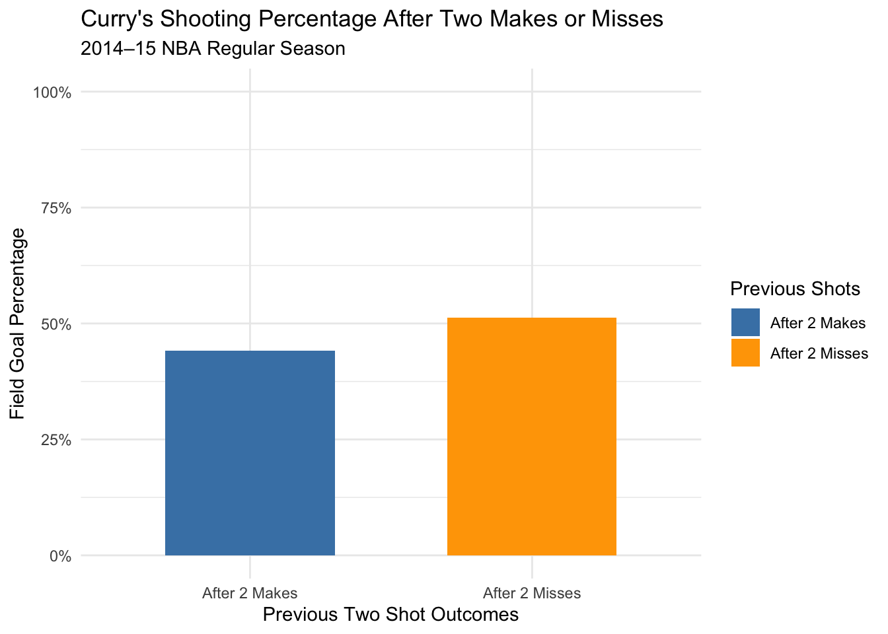

Is the Hot Hand Real? Stephen Curry’s 2014–15 MVP Season
Author
Matthew Diekmann
Introduction
In basketball, a player is often described as being “on fire” when they make several consecutive shots. This raises an interesting statistical question: does making consecutive shots actually increase a player’s probability of making the next shot, or can these streaks be explained by random chance? To investigate this, I will analyze Stephen Curry’s 2014–15 MVP season and compare his actual shooting sequences to randomly generated sequences. I will use a simulation-based hypothesis test to determine whether Curry’s shooting performance provides evidence of a hot-hand effect.
Data
The dataset contains Curry’s individual field goal attempts during the 2014–15 NBA regular season. It includes whether each shot was made, the game in which it occurred, and the time remaining when the shot was taken. The dataset was obtained from Crawles’ NBA Analytics GitHub repository, which contains historical NBA shot-level data. The data were originally collected from NBA.com and ESPN through NBA Savant.
Before investigating shooting streaks, I need to arrange Curry’s shots chronologically. Because the game clock counts down, I arrange the periods in ascending order and the remaining minutes and seconds in descending order. I then use lag() to identify the outcomes of his previous two shots, calculating these separately for each game.
I will compare Curry’s shooting percentage after making two consecutive shots with his percentage after missing two consecutive shots. This provides an initial measure of whether his shooting success appears to depend on his recent performance.
# A tibble: 2 × 3
streak attempts fg_pct
<chr> <int> <dbl>
1 After 2 Makes 272 0.441
2 After 2 Misses 287 0.512
Code
ggplot(observed, aes(x = streak, y = fg_pct, fill = streak)) +geom_col(width =0.6) +scale_y_continuous(labels = scales::percent,limits =c(0, 1) ) +scale_fill_manual(values =c("After 2 Makes"="steelblue","After 2 Misses"="orange") ) +labs(title ="Curry's Shooting Percentage After Two Makes or Misses",subtitle ="2014–15 NBA Regular Season",x ="Previous Two Shot Outcomes",y ="Field Goal Percentage",fill ="Previous Shots" ) +theme_minimal()

The graph shows that Curry actually had a lower shooting percentage after making two consecutive shots than after missing two consecutive shots. His field goal percentage was approximately 44% after two makes, compared to 51% after two misses, a difference of about 7.1 percentage points. This is the opposite of what I initially expected, since the hot-hand hypothesis predicts a higher shooting percentage following consecutive makes. Although this appears to suggest a possible cold-hand effect, the difference could still be explained by random variation. I will first test my original hot-hand hypothesis and then investigate whether the negative difference itself is statistically unusual.
Hypothesis Test
The null hypothesis is that Curry’s makes and misses occur independently within each game, given his number of makes and misses in that game. The alternative hypothesis is that his shooting sequences exhibit a positive hot-hand effect.
Here, \(MM\) represents two previous makes and \(XX\) represents two previous misses.
A positive statistic indicates better shooting after consecutive makes.
Simulation
To simulate shooting under the null hypothesis, I will randomly rearrange Curry’s makes and misses within each game. This preserves his number of successful and unsuccessful shots in every game while removing the original shooting sequences.
First, I write a function to calculate the hot-hand statistic for a dataset.
Code
hot_hand_stat <-function(data) { data <- data |>group_by(espn_game_id) |>mutate(previous_1 = dplyr::lag(shot_made_flag),previous_2 = dplyr::lag(shot_made_flag, 2) ) |>ungroup() after_makes <- data |>filter(previous_1 ==1, previous_2 ==1) after_misses <- data |>filter(previous_1 ==0, previous_2 ==0)mean(after_makes$shot_made_flag) -mean(after_misses$shot_made_flag)}
Next, I write a function that randomly rearranges the shooting outcomes within each game and returns the resulting hot-hand statistic.
I can now use map_dbl() to repeat this simulation 2,000 times. Each simulation produces one numerical value representing the difference in shooting percentages under the null hypothesis.
The histogram displays the distribution of shooting-percentage differences from 2,000 simulations in which Curry’s makes and misses were randomly rearranged within each game. The red dashed line represents Curry’s observed difference of −7.1 percentage points, which falls to the left of most simulated results. Interestingly, the simulated distribution is centered around −2.89 percentage points rather than zero. This is consistent with streak selection bias, a phenomenon discussed by Miller and Sanjurjo (2018), in which calculating shooting percentages after consecutive makes or misses in finite sequences can produce a negative difference even when shots are independent. By comparing Curry’s observed difference to the simulated distribution rather than zero, the permutation test accounts for this bias. The original one-sided hypothesis test produced a p-value of 0.870, so I fail to reject the null hypothesis at the 5% significance level. However, this test was designed to detect a positive hot-hand effect, while Curry’s observed difference was negative. This raises a different question: is his negative shooting-percentage difference unusually large in magnitude, potentially suggesting a cold-hand effect? To explore this possibility, I will conduct an additional two-sided test.
Exploring a Possible Cold-Hand Effect
My original hypothesis test investigated whether Curry was more likely to make a shot after two consecutive makes. However, because the observed difference was negative, I decided to broaden the investigation to consider whether Curry’s recent shooting outcomes predict his next shot in either direction. A negative relationship could indicate a cold-hand effect, while a positive relationship could indicate a hot-hand effect. I will use the same simulated null distribution to perform an exploratory two-sided test, examining whether Curry’s observed statistic is unusually far from the center of the null distribution.
For this exploratory analysis, the hypotheses are:
Null hypothesis: Curry’s shooting sequence is consistent with random ordering of makes and misses within games.
Alternative hypothesis: Curry’s shooting sequence exhibits an unusually positive or negative dependence on his previous two shots.
The simulated null distribution had a mean of approximately −2.89 percentage points, while Curry’s observed difference was −7.10 percentage points. This means his actual statistic was about 4.21 percentage points below the simulated null mean. The exploratory two-sided test produced a p-value of 0.2555, indicating that approximately 25.55% of the randomized shooting sequences produced a difference at least as far from the null mean as Curry’s observed difference. Since this p-value is greater than 0.05, I fail to reject the null hypothesis. Therefore, the data do not provide statistically significant evidence of either a hot-hand or cold-hand effect.
Conclusion
This simulation study initially investigated whether Stephen Curry exhibited a hot-hand effect during his 2014–15 MVP season. Surprisingly, Curry shot approximately 7.1 percentage points worse after making two consecutive shots than after missing two consecutive shots, leading me to investigate whether this negative difference could indicate a cold-hand effect. The original one-sided test produced a p-value of 0.870, while the exploratory two-sided test produced a p-value of 0.2555. Neither test was statistically significant at the 5% level, so I fail to reject the null hypothesis and cannot conclude that Curry’s shooting sequences exhibit either a hot-hand or cold-hand effect. However, the analysis does not account for differences in shot difficulty, defensive pressure, or shot selection, which could influence shooting percentages independently of previous outcomes.
Data Source
Crawles. (n.d.). Spark NBA Analytics [GitHub repository]. GitHub.